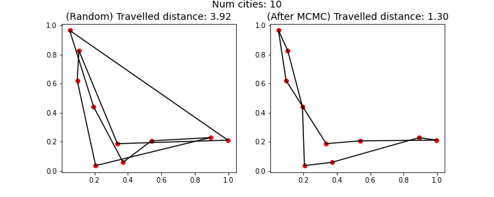
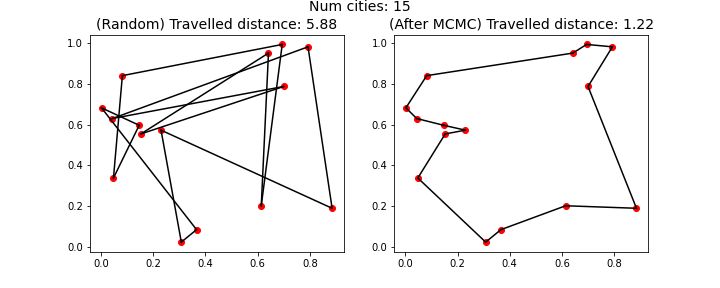
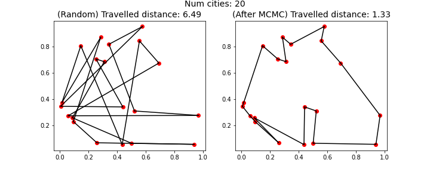
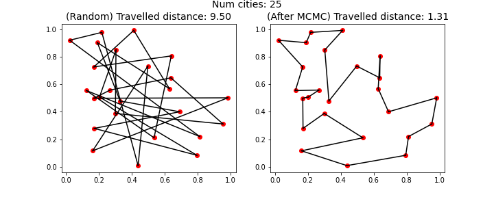
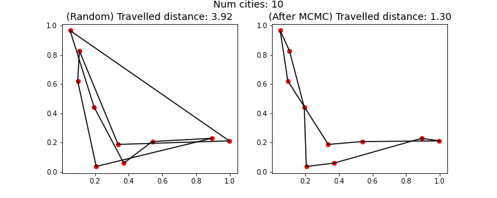
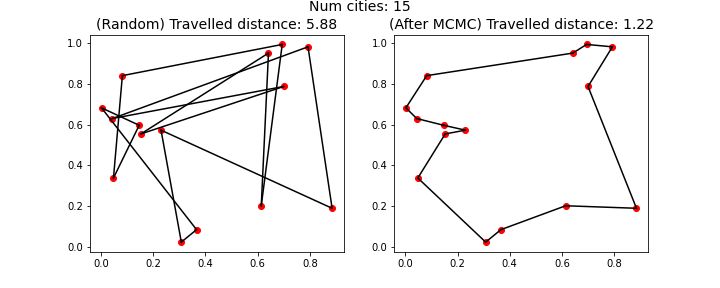
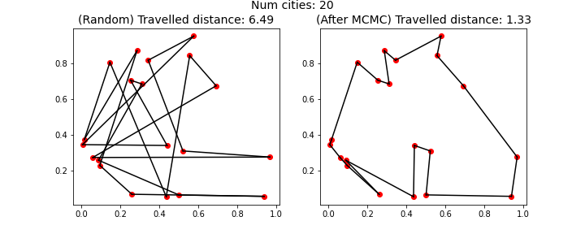
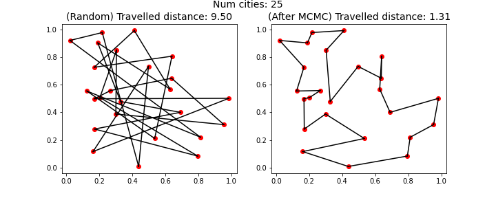

Markov Chain Monte Carlo for Optimization
Sometimes we encounter ideas which can change how we perceive concepts
which we thought we were familiar with.
I recently came across an interesting application of Markov Chain Monte Carlo (MCMC)
which caused me to view the method in a different light which I wanted to share.
The idea is that sampling methods such as MCMC can be used to tackle difficult
optimization problems. I will demonstrate this with two applications,
one in cryptography and one in obtain solutions to the travelling salesman problem.
The associated code for this blog post can be found on
github.
What is MCMC
I usually feel that the full mathematical derivation for a method is best explained
by a textbook or lecture notes (when such derivations exist in plenty, see [1], [2]),
and that an derivation in a blog is better suited if it relies more
on intuition and illustrations. This blog post is no different and the explanations
will rely mostly on intuition.
MCMC is collection of methods which was first designed to obtain samples from complex distributions. In this post we will focus on the MCMC method known as Metropolis-Hastings (MH). While methods such as rejection sampling can work well when we have a clear idea of the shape of the distribution of interest, it is not clear on how to extend these methods when the shape of the distribution is unknown or when it is difficult to design a good proposal distribution.
With MCMC methods we do not necessarily need to know the exact shape of shape of the distribution. Instead we create a "particle" that travels around the distribution, obtaining samples wherever it stops. Usually, we let the particle travel around the distribution by proposing a new state and then comparing this new state to the current one that the particle is in. In Metropolis-Hastings, given that we are in state \(x\), we propose a new state \(x^*\) from a proposal distribution \(g\) and then accept that new state with probability $$\min \bigg(\frac{P(x^*)g(x|x^*)}{P(x)g(x^*|x)}, 1 \bigg).$$ where \(P(x)\) denotes the probability of observing \(x\). While the formula can seem a bit perplexing, we can make sense of the constituent terms. The fact that the particle should prefer spending time in regions of high probability (since we are more likely to obtain samples from there) can be seen to be captured by the ratio of probabilities of the two states, \(P(x^*)/P(x)\). We are more likely to accept a new proposed state if the probability of the new state \(x^*\) is greater than that of the current state \(x\). While one can interpret the ratio of the proposal distributions (e.g, that we should be more likely to visit states that can be hard to reach but easy to get back from), in this post we will consider mostly consider symmetric proposal distributions where \(g(x|x^*) = g(x^*|x)\) and thus that term vanishes. By creating the particle trajectory in this way, one can show that in the limit one will obtain samples from the distribution of interest. This might be easiest to see with an example. Below, we can see the result of MCMC when we attempt to sample from a mixture of Gaussians. We use a proposal distribution which is given by a Normal distribution with mean at the current state \(x\) and standard derivation 1.5. We run the entire method for 5000 iterations and the green line indicates where we obtain a sample. The histogram is the histogram over all obtained samples.
As can be seen from the video, we manage to obtain an accurate representation of the distribution by the use of MCMC.
MCMC is collection of methods which was first designed to obtain samples from complex distributions. In this post we will focus on the MCMC method known as Metropolis-Hastings (MH). While methods such as rejection sampling can work well when we have a clear idea of the shape of the distribution of interest, it is not clear on how to extend these methods when the shape of the distribution is unknown or when it is difficult to design a good proposal distribution.
With MCMC methods we do not necessarily need to know the exact shape of shape of the distribution. Instead we create a "particle" that travels around the distribution, obtaining samples wherever it stops. Usually, we let the particle travel around the distribution by proposing a new state and then comparing this new state to the current one that the particle is in. In Metropolis-Hastings, given that we are in state \(x\), we propose a new state \(x^*\) from a proposal distribution \(g\) and then accept that new state with probability $$\min \bigg(\frac{P(x^*)g(x|x^*)}{P(x)g(x^*|x)}, 1 \bigg).$$ where \(P(x)\) denotes the probability of observing \(x\). While the formula can seem a bit perplexing, we can make sense of the constituent terms. The fact that the particle should prefer spending time in regions of high probability (since we are more likely to obtain samples from there) can be seen to be captured by the ratio of probabilities of the two states, \(P(x^*)/P(x)\). We are more likely to accept a new proposed state if the probability of the new state \(x^*\) is greater than that of the current state \(x\). While one can interpret the ratio of the proposal distributions (e.g, that we should be more likely to visit states that can be hard to reach but easy to get back from), in this post we will consider mostly consider symmetric proposal distributions where \(g(x|x^*) = g(x^*|x)\) and thus that term vanishes. By creating the particle trajectory in this way, one can show that in the limit one will obtain samples from the distribution of interest. This might be easiest to see with an example. Below, we can see the result of MCMC when we attempt to sample from a mixture of Gaussians. We use a proposal distribution which is given by a Normal distribution with mean at the current state \(x\) and standard derivation 1.5. We run the entire method for 5000 iterations and the green line indicates where we obtain a sample. The histogram is the histogram over all obtained samples.
MCMC for optimization
From the previous section we could see that MCMC is an attractive method to obtain samples
from complex distributions. Something that might have been missed though is that by running the
method and storing the maximum values of all the states visited and proposed
by the particle we can obtain a good estimate of the maximum of the distribution.
That this will yield an estimate close to the maximum might not be surprising given
that the region containing the maximum is (often) a region of high probability,
i.e, it is likely that we will obtain samples from there which means the particle
will travel there at some point.
Below we can see this process for the same example as above. We do not consider
the estimated histogram now but instead only look at how the particles move
and where we observe the largest value.
As can be seen from the video, by running the MCMC method we have managed to locate the maximum
of the distribution as indicated by the red diamond. And given that MCMC is guaranteed
to give us samples from the distribution in the limit, it is likely that we will
obtain a sample close to the maximum by waiting for a sufficient amount of time
(in the example above we can see that we obtain a good approximation in around 200 iterations).
We thus see that MCMC can be a used for sampling and optimization problems.
Of course, some questions or comments might now arise regarding applicability of MCMC for optimization. We could in fact have solved the optimization problem above in far fewer iterations by simply using some form of gradient based optimization technique. But the true strength of the method does not lie in finding the maximum of continuous distributions but instead in finding the maximum of discrete distributions where other methods might not work. Restricting ourselves to finding the maximum of discrete distributions might seem like a great limitation for the method. Most discrete optimization problems do not aim to find the maximum of a discrete distribution but instead to maximize a non-negative score/value function over a discrete set. But given a discrete optimization problem and given that the sum of the score/values over all elements in the discrete set is finite, we can reformulate the problem as an optimization problem over a discrete distribution as follows. Given that the score of element \(x\) is denoted by \(S(x)\), a probability distribution over the discrete set can be created where the probability of \(x\) is given as $$P(x) = \frac{S(x)}{\sum_y S(y)}.$$ Since we now have a discrete probability distribution to work with, we are in a place where we can run MCMC algorithms to solve this optimization problem! And given that the global maximum exactly corresponds to the most likely value of the distribution, we know that it is probable that we will sample it at some iteration in the MCMC scheme (assuming that we have designed an efficient proposal distribution). Using Metropolis-Hastings we also avoid the calculation of the full sum given that it cancels in the ratio between the two terms \(P(x^*)/P(x)\). In the following sections I will demonstrate the use of this technique to solve an encryption/decryption problem and to study sub-networks of neural networks.
Of course, some questions or comments might now arise regarding applicability of MCMC for optimization. We could in fact have solved the optimization problem above in far fewer iterations by simply using some form of gradient based optimization technique. But the true strength of the method does not lie in finding the maximum of continuous distributions but instead in finding the maximum of discrete distributions where other methods might not work. Restricting ourselves to finding the maximum of discrete distributions might seem like a great limitation for the method. Most discrete optimization problems do not aim to find the maximum of a discrete distribution but instead to maximize a non-negative score/value function over a discrete set. But given a discrete optimization problem and given that the sum of the score/values over all elements in the discrete set is finite, we can reformulate the problem as an optimization problem over a discrete distribution as follows. Given that the score of element \(x\) is denoted by \(S(x)\), a probability distribution over the discrete set can be created where the probability of \(x\) is given as $$P(x) = \frac{S(x)}{\sum_y S(y)}.$$ Since we now have a discrete probability distribution to work with, we are in a place where we can run MCMC algorithms to solve this optimization problem! And given that the global maximum exactly corresponds to the most likely value of the distribution, we know that it is probable that we will sample it at some iteration in the MCMC scheme (assuming that we have designed an efficient proposal distribution). Using Metropolis-Hastings we also avoid the calculation of the full sum given that it cancels in the ratio between the two terms \(P(x^*)/P(x)\). In the following sections I will demonstrate the use of this technique to solve an encryption/decryption problem and to study sub-networks of neural networks.
Encryption/Decryption
(This problem and solution approach has been adapted from the book Introduction to Stochastic Processes with R by Robert. P. Dobrow.)
Given an encrypted text as follows:
hmao xlr hmao ioglwh qbvk hmao xlr hmao axmhyh kmhi vq lyayhhgij ebvayyr oy ioxi zvmcr lvi oxsy hmao ioglwh iv oxeeyl gh xh oy ioxi zvmcr oxsy ioy qgw ibyy wbvz zgiovmi xlj hxe vb kvghimby gl hmk bykykdyb iogh ioxi zgiogl x sybj cgiicy zogcy dvio iovm xlr oy hoxcc dvio dy ryxr xlr xqiyb x cgiicy zogcy kvby lvi hv kmao xh jvmb lxkyh xlr kykvbgyh hoxcc dy bykxglglw
We are interested in the task of retrieving the original text. We restrict ourselves here to encryption ciphers which only reassign the letters of the alphabet. While this might seem like a simple problem, there are 26! possible such ciphers and thus it is infeasible to search through them all. We will thus solve this problem by the use of MCMC methods. The idea that we will use is that written text is usually not random, i.e, two texts with widely different contents tend to have similar statistical properties. We will focus on the statistical properties that are associated with letter pairs in this blog post. In the English language it is much more likely that an "N" will be followed by an "O" compared to being followed by a "Q". Thus, we can collect these letter-pair statistics from some suitable English reference text and then try and find a decryption cipher that decrypts the encrypted text such that the word statistics of the decrypted text matches those of the reference text. In this blog post we will use a collection of Jane Austen’s books (collected from here, and the compiled text can be found here). We go through the entire compiled text and count the occurences of letter-pairs (including whitespace), i.e, how often we can find letter combinations such as "aa", "ab", "ac", ... "zz", "z " in the text. We store this information in a matrix \(M\) (rows and columns indexed by "a","b","c",...,"z"," ") and create our scoring function over decryption ciphers as $$S(\textrm{decryption cipher}) = \prod_{l_i,l_j \in \textrm{decrypted text}} M(l_i,l_j).$$ This can then be turned into a probability distribution as described above by dividing the score by the sum of the score of all decryption ciphers. The only part left is to design a proposal function that can propose a new decryption cipher. One of the simplest proposals (that is also symmetric) is the one which switches the assignment between two different letters in the current decryption cipher. This is the one we will consider here. Now we can attempt to decrypt the original message. Running the MH routine 2500 iterations yields the following result:
Iteration 500: snch ery snch thirgs umod snch ery snch censas dnst ou racassitf pmocaay ha thet wonly rot heja snch thirgs to heppar is es ha thet wonly heja tha uig tmaa gmow withont erf sep om doistnma ir snd madadbam this thet withir e jamf littla whila both thon ery ha shell both ba yaey ery eutam e littla whila doma rot so dnch es fonm redas ery dadomias shell ba madeirirg
Iteration 1000: such any such things mrod such any such causes dust om necessitf proceey he that wouly not hake such things to happen is as he that wouly hake the mig tree grow without anf sap or doisture in sud rededber this that within a kerf little while both thou any he shall both be yeay any amter a little while dore not so duch as four nades any dedories shall be redaining
Iteration 1500: such any such things mrod such any such causes dust om necessitf proceey he that wouly not have such things to happen is as he that wouly have the mig tree grow without anf sap or doisture in sud rededber this that within a verf little while both thou any he shall both be yeay any amter a little while dore not so duch as four nades any dedories shall be redaining
Iteration 2000: such any such things drom such any such causes must od necessitf proceey he that wouly not have such things to happen is as he that wouly have the dig tree grow without anf sap or moisture in sum remember this that within a verf little while both thou any he shall both be yeay any adter a little while more not so much as four names any memories shall be remaining
Iteration 2315: such and such things from such and such causes must of necessity proceed he that would not have such things to happen is as he that would have the fig tree grow without any sap or moisture in sum remember this that within a very little while both thou and he shall both be dead and after a little while more not so much as your names and memories shall be remaining
As we can see, after around 2315 iterations we have managed to decode the encrypted sentence (which is written by Marcus Aurelius and can be found in his book Meditations) and obtain the correct decryption cipher. Due to the inherent random nature of the MCMC method, I had to run the method 6 times in order to decrypt the message accurately.
Given an encrypted text as follows:
hmao xlr hmao ioglwh qbvk hmao xlr hmao axmhyh kmhi vq lyayhhgij ebvayyr oy ioxi zvmcr lvi oxsy hmao ioglwh iv oxeeyl gh xh oy ioxi zvmcr oxsy ioy qgw ibyy wbvz zgiovmi xlj hxe vb kvghimby gl hmk bykykdyb iogh ioxi zgiogl x sybj cgiicy zogcy dvio iovm xlr oy hoxcc dvio dy ryxr xlr xqiyb x cgiicy zogcy kvby lvi hv kmao xh jvmb lxkyh xlr kykvbgyh hoxcc dy bykxglglw
We are interested in the task of retrieving the original text. We restrict ourselves here to encryption ciphers which only reassign the letters of the alphabet. While this might seem like a simple problem, there are 26! possible such ciphers and thus it is infeasible to search through them all. We will thus solve this problem by the use of MCMC methods. The idea that we will use is that written text is usually not random, i.e, two texts with widely different contents tend to have similar statistical properties. We will focus on the statistical properties that are associated with letter pairs in this blog post. In the English language it is much more likely that an "N" will be followed by an "O" compared to being followed by a "Q". Thus, we can collect these letter-pair statistics from some suitable English reference text and then try and find a decryption cipher that decrypts the encrypted text such that the word statistics of the decrypted text matches those of the reference text. In this blog post we will use a collection of Jane Austen’s books (collected from here, and the compiled text can be found here). We go through the entire compiled text and count the occurences of letter-pairs (including whitespace), i.e, how often we can find letter combinations such as "aa", "ab", "ac", ... "zz", "z " in the text. We store this information in a matrix \(M\) (rows and columns indexed by "a","b","c",...,"z"," ") and create our scoring function over decryption ciphers as $$S(\textrm{decryption cipher}) = \prod_{l_i,l_j \in \textrm{decrypted text}} M(l_i,l_j).$$ This can then be turned into a probability distribution as described above by dividing the score by the sum of the score of all decryption ciphers. The only part left is to design a proposal function that can propose a new decryption cipher. One of the simplest proposals (that is also symmetric) is the one which switches the assignment between two different letters in the current decryption cipher. This is the one we will consider here. Now we can attempt to decrypt the original message. Running the MH routine 2500 iterations yields the following result:
Iteration 500: snch ery snch thirgs umod snch ery snch censas dnst ou racassitf pmocaay ha thet wonly rot heja snch thirgs to heppar is es ha thet wonly heja tha uig tmaa gmow withont erf sep om doistnma ir snd madadbam this thet withir e jamf littla whila both thon ery ha shell both ba yaey ery eutam e littla whila doma rot so dnch es fonm redas ery dadomias shell ba madeirirg
Iteration 1000: such any such things mrod such any such causes dust om necessitf proceey he that wouly not hake such things to happen is as he that wouly hake the mig tree grow without anf sap or doisture in sud rededber this that within a kerf little while both thou any he shall both be yeay any amter a little while dore not so duch as four nades any dedories shall be redaining
Iteration 1500: such any such things mrod such any such causes dust om necessitf proceey he that wouly not have such things to happen is as he that wouly have the mig tree grow without anf sap or doisture in sud rededber this that within a verf little while both thou any he shall both be yeay any amter a little while dore not so duch as four nades any dedories shall be redaining
Iteration 2000: such any such things drom such any such causes must od necessitf proceey he that wouly not have such things to happen is as he that wouly have the dig tree grow without anf sap or moisture in sum remember this that within a verf little while both thou any he shall both be yeay any adter a little while more not so much as four names any memories shall be remaining
Iteration 2315: such and such things from such and such causes must of necessity proceed he that would not have such things to happen is as he that would have the fig tree grow without any sap or moisture in sum remember this that within a very little while both thou and he shall both be dead and after a little while more not so much as your names and memories shall be remaining
As we can see, after around 2315 iterations we have managed to decode the encrypted sentence (which is written by Marcus Aurelius and can be found in his book Meditations) and obtain the correct decryption cipher. Due to the inherent random nature of the MCMC method, I had to run the method 6 times in order to decrypt the message accurately.
Travelling salesman
A classic problem in discrete optimization is the problem of the Travelling salesman. Wikipedia describes it as follows
Given a list of cities and the distances between each pair of cities, what is the shortest possible route that visits each city exactly once and returns to the origin city?
This is an NP-hard problem and thus there are no solvers that can always yield a solution in reasonable time. We can investigate how MCMC methods fare on this problem. As before, we need to convert this to a problem where we optimize over a discrete distribution. Given that we denote a path between all cities for the salesman as \(p\), we can denote the total travelled length as $$ S(p) = \sum_{(i,j) \in p} d(i,j)$$ where \(d(i,j)\) is the distance between cities \(i\) and \(j\). Given that we now seek to obtain the shortest path between the cities using MCMC, we need to convert this to a probability distribution where the solution with the smallest total travelled length is the one with the largest probability. This can easily be done by creating the probability distribution as follows $$P(p) = \frac{\exp(-S(p))}{\sum_p \exp(-S(p))}$$ The only remaining part to obtain a solution for this problem with MCMC is to design a proposal distribution over the paths between all cities. In this experiment I chose to swap the order in which we visit two cities, i.e, if the current state was to visit the cities in the order "City 1, City 3, City 2, City 4, City 5, City 1", we can propose a new state by selecting two random cities and switching their position. So if we randomly selected City 3 and City 5 we would obtain the new visit order as "City 1, City 5, City 2, City 4, City 3, City 1". This is a symmetric proposal distribution and thus it simplifies the calculations.
Randomizing city coordinates in the unit square, we can see how MCMC fares on this problem. The MCMC scheme is run for 10000 iterations with 10 random restarts. The results are displayed below when we vary the number of cities between 10,15,20,25, the image to the left displays a random solution and the image on the right displays the optimal solution obtained through MCMC. The entire scheme takes around 2-3 seconds for each city setting.     We can see that we obtain near-optimal solutions in all of the cases. While the problem can seem easy to solve manually, it can be difficult to design algorithms that obtain good solutions. One strength of the MCMC scheme for this problem is that it can easily be generalized to higher dimensional spaces.
Given a list of cities and the distances between each pair of cities, what is the shortest possible route that visits each city exactly once and returns to the origin city?
This is an NP-hard problem and thus there are no solvers that can always yield a solution in reasonable time. We can investigate how MCMC methods fare on this problem. As before, we need to convert this to a problem where we optimize over a discrete distribution. Given that we denote a path between all cities for the salesman as \(p\), we can denote the total travelled length as $$ S(p) = \sum_{(i,j) \in p} d(i,j)$$ where \(d(i,j)\) is the distance between cities \(i\) and \(j\). Given that we now seek to obtain the shortest path between the cities using MCMC, we need to convert this to a probability distribution where the solution with the smallest total travelled length is the one with the largest probability. This can easily be done by creating the probability distribution as follows $$P(p) = \frac{\exp(-S(p))}{\sum_p \exp(-S(p))}$$ The only remaining part to obtain a solution for this problem with MCMC is to design a proposal distribution over the paths between all cities. In this experiment I chose to swap the order in which we visit two cities, i.e, if the current state was to visit the cities in the order "City 1, City 3, City 2, City 4, City 5, City 1", we can propose a new state by selecting two random cities and switching their position. So if we randomly selected City 3 and City 5 we would obtain the new visit order as "City 1, City 5, City 2, City 4, City 3, City 1". This is a symmetric proposal distribution and thus it simplifies the calculations.
Randomizing city coordinates in the unit square, we can see how MCMC fares on this problem. The MCMC scheme is run for 10000 iterations with 10 random restarts. The results are displayed below when we vary the number of cities between 10,15,20,25, the image to the left displays a random solution and the image on the right displays the optimal solution obtained through MCMC. The entire scheme takes around 2-3 seconds for each city setting.     We can see that we obtain near-optimal solutions in all of the cases. While the problem can seem easy to solve manually, it can be difficult to design algorithms that obtain good solutions. One strength of the MCMC scheme for this problem is that it can easily be generalized to higher dimensional spaces.
Conclusion
From this blog post we could get an introduction to what MCMC is and how we can use it for optimization purposes.
While an MCMC method is not always the most suitable tool for optimization problems, I think that having this perspective that MCMC is also an optimization method opens up the field for people from statistics and probability theory who might be familiar with designing good MCMC schemes but not too experienced in the field of optimization. This cross-field collaboration might lead to new perspectives, discussions and the creation of new methods.